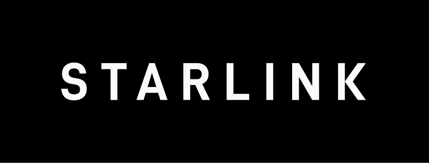

eSIM Virtual Starlink
Internet Via Satélite Direto no Seu Telemóvel
Transforme seu smartphone em um modem via satélite. Com mais de 7.000 satélites em órbita baixa, a Starlink leva conectividade para onde as redes tradicionais não chegam.
7.000+
Satélites em órbita
100+
Países atendidos
4M+
Usuários ativos
ACESSO
EXCLUSIVO ATRAVÉS DO PROGRAMA
STARLINK PARTNER
SOLUTIONS
Somos parceiros oficiais autorizados, garantindo a você acesso legítimo e seguro à tecnologia de internet via satélite mais avançada do mundo.
Uma iniciativa conjunta com operadoras portuguesas para homologação e teste da rede Direct-to-Cell.
Selo de Credibilidade
Protocolo de Teste Autorizado - Fase de Integração de Rede
Autorizada Starlink
Certificação oficial Starlink
Acesso Garantido
Conexão direta à rede oficial
Suporte Dedicado
Atendimento especializado
O Que é o eSIM Virtual Starlink?
O eSIM Virtual Starlink utiliza a revolucionária tecnologia Direct-to-Cell, que transforma os satélites em órbita em torres de telemóvel no espaço. Isso significa que seu smartphone pode se conectar diretamente aos satélites, sem necessidade de antenas externas ou equipamentos adicionais.
Satélites como Torres de Telemóvel no Espaço
A constelação Starlink opera com mais de 7.000 satélites em órbita baixa (LEO), criando uma rede global de conectividade sem precedentes. Diferente da internet via satélite tradicional, a tecnologia Direct-to-Cell permite que qualquer smartphone moderno se conecte diretamente, transformando seu aparelho em um verdadeiro modem via satélite.
- Funciona com qualquer smartphone Android ou iOS
- Não precisa de antena externa ou equipamentos
- Cobertura em áreas remotas, rurais e marítimas
- Ideal para viagens, barcos, fazendas e expedições
Cobertura Global
Mais de 7.000 satélites em órbita baixa garantem cobertura em praticamente qualquer lugar do planeta, incluindo áreas onde as operadoras tradicionais não chegam.
Sem Equipamentos
Diferente da Starlink tradicional, você não precisa de antena ou equipamentos especiais. Seu smartphone atual é tudo que você precisa para se conectar.
Baixa Latência
Por operar em órbita baixa (550km), a Starlink oferece latência muito menor que satélites tradicionais, permitindo chamadas de vídeo, streaming e navegação fluida.
Para Quem é o eSIM Virtual?
Se você precisa de internet em lugares onde as operadoras tradicionais não chegam, o eSIM Virtual Starlink é a solução ideal para você.
Produtores Rurais
Mantenha-se conectado na fazenda, monitore equipamentos IoT e gerencie seu negócio de qualquer lugar da propriedade.
Navegadores e Pescadores
Internet confiável em alto mar para comunicação, navegação GPS e emergências. Nunca mais fique isolado.
Aventureiros e Viajantes
Trilhas, acampamentos e expedições em locais remotos com acesso garantido à internet para segurança e comunicação.
Motoristas e Caminhoneiros
Conectividade nas estradas, mesmo em trechos sem cobertura de operadoras tradicionais.
Empresas em Áreas Remotas
Operações de mineração, construção civil e energia em locais isolados com internet estável.
Comunidades Isoladas
Acesso à educação, telemedicina e serviços essenciais para comunidades em regiões sem infraestrutura.
Adquira Seu Plano Starlink
Escolha o plano ideal para você e comece a usar hoje mesmo
Escolha seu Plano
Selecione o plano que melhor atende às suas necessidades.
Baixe o App
Instale o App Modem Virtual disponível para Android e iOS.
Conecte-se
Pronto! Seu telemóvel agora funciona como um modem via satélite.
Já Tem Outro Cartão SIM? Sem Problemas!
eSIM Virtual (eSIM)
O cartão SIM Starlink pode ser ativado virtualmente no seu telemóvel, sem precisar de espaço físico.
Mantenha Seu Número
Não precisa trocar de número! Você receberá um novo número Starlink e poderá usar ambos.
Uso Simultâneo
Use os dois cartões SIM ao mesmo tempo: seu cartão SIM atual + o cartão SIM Starlink, sem nenhuma interferência.
Após a ativação, você receberá seu novo número Starlink e poderá aproveitar a conexão via satélite junto com sua operadora atual.
-
1 Conexão Simultânea
-
Sinal Via Satélite
-
eSIM Virtual / Físico
-
3 Conexões Simultâneas
-
Sinal Via Satélite
-
eSIM Virtual / Físico
-
6 Conexões Simultâneas
-
Velocidade Extraordinária
-
Sinal Via Satélite
-
Cartão SIM Físico
Como Funciona o Pagamento
Compra do Cartão SIM
€ 29,90
Valor do cartão SIM escolhido pago agora
Ativação do Cartão SIM
Diretamente com o gerente
Ativação Starlink personalizada
Após 2 Meses
€ 29,90
Primeira mensalidade do plano
Você terá 2 meses de uso grátis. A primeira mensalidade só será cobrada após esse período. Cancele quando quiser.
Pagamento seguro via MB WAY - Cancele quando quiser